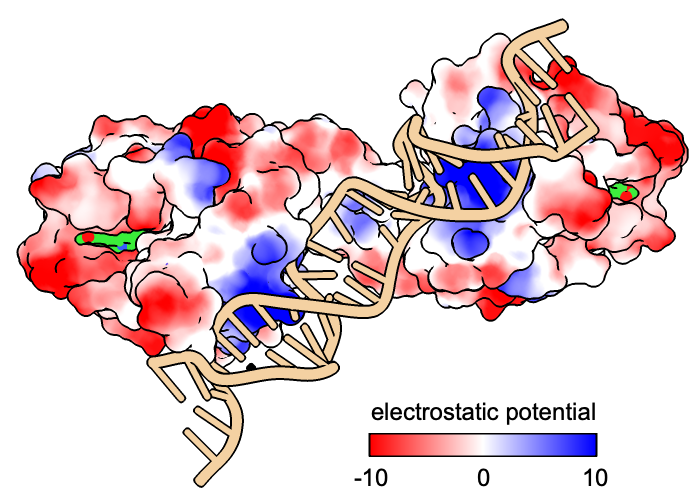

|  |
| see image how-to |
The key command creates a legend or key to show the value-color correspondences in a figure, such as from:
It is the command-line implementation of the Color Key tool. See also: 2dlabels, making images
The color key is added as a new model that can be acted on by general commands such as close and show/hide. Initial defaults are described in this page, but if a color key is already present, the existing model is simply updated and any unspecified options are left unchanged. Only one color key can be present at a time. The key delete or ~key command removes an existing color-key model.
The command key listfonts lists the possible choices of label font (initial default Arial).
The colors-and-labels specification can be given in either of the two ways described below, or even as a mixture of the two. Each label can be numeric, text, or blank. The initial default is
color-spec:labelFor example, to give the initial-default colors and labels mentioned above:
key blue:min white: red:max
:label1 :label2 [...] :labelN
...where the number of labels must equal the number of colors in the palette. The command palette list lists the available palettes in the Log. Examples:
key ^piyg-5 :-2 :-1 :0 :1 :2
key lipophilicity :-20 :0 :20 size .05,.25 pos .85,.05
Example of a mixture of the two types of specification:
key blue:0.0 cyanmaroon :0.2 :0.5 :1.0 pos .2,.08 size .6,.05
The colors and labels must be given in left→right order for a horizontal key or bottom→top for a vertical key. Any label text that includes a space must be enclosed in quotation marks.
The size and pos options, respectively, set the dimensions and lower-left-corner position of the rectangular color-key bar. The values are expressed in fractional coordinates 0.0-1.0 where 1.0 represents the full width or height of the graphics window and 1.0,1.0 its top right corner.
Numeric labels can be spaced equally along the bar or proportional to the values. Text labels are spaced equally. If numeric and text (or blank) labels are used in the same color key, or the numeric labels are not in monotonic order (always increasing or always decreasing), the entire set of labels will be treated as text and cannot be spaced proportional to values.
There are options for which side of the bar to place the labels and how to align the labels on a vertical bar. All of the color key labels have the same (but adjustable) color, font, fontsize, and bold and/or italic setting as each other. If labels of multiple different colors and sizes are needed, they can be added with 2dlabels instead.
The color key can have a border (outline) and tick marks.
size width,height
Dimensions of the rectangular color-key bar. The values are expressed in fractional coordinates 0.0-1.0 where 1.0 represents the full width or height of the graphics window and 1.0,1.0 its top right corner (initial default 0.25,0.05).
pos xpos,ypos
Lower-left-corner position of the rectangular color-key bar. The values are expressed in fractional coordinates 0.0-1.0 where 1.0 represents the full width or height of the graphics window and 1.0,1.0 its top right corner (initial default 0.7,0.08).
colorTreatment blended | distinct
Whether the colors should be interpolated along the bar (blended, initial default) or shown as distinct bands.
numericLabelSpacing equal | proportional
Whether to space numeric labels equally along the bar or proportional to the values (initial default). Text labels are spaced equally. If numeric and text (or blank) labels are used in the same color key, or the numeric labels are not in monotonic order (always increasing or always decreasing), the entire set of labels will be treated as text and cannot be spaced proportional to values.
labelColor color-spec | default
If the label color is set to auto or default (initial default), it will automatically adjust to white or black depending on the color of the window background.
font font-name
Possible choices of font-name (initial default Arial) can be listed with the command key listfonts. Font names with spaces must be enclosed in quotation marks.
fontSize font-size
The font-size must be an integer greater than zero (initial default 24).
bold true | false
Whether the label text should be bold (initial default false).
italic true | false
Whether the label text should be italic (initial default false).
justification left | right | decimal
Whether to align the labels on a vertical bar to the left, to the right (initial default for text), or by decimal position (initial default for numerical). This option does not apply to horizontal bars.
labelSide left/top | right/bottom
Which side of the bar to place labels. Vertical bars (taller than wide) can have the labels on the left or right (initial default right) whereas horizontal bars can have the labels on the top or the bottom (initial default bottom).
labelOffset offset
Move all labels offset pixels further away from (positive values) or closer to (negative values) the bar.
border true | false
Whether the color key should have an outline border (initial default true).
borderColor color-spec | default
If the border color is set to auto or default (initial default), it will automatically adjust to white or black depending on the color of the window background.
borderWidth width
Border pixel width (initial default 2.0).
ticks true | false
Whether to draw tick marks on the color key (initial default false).
tickLength length
Tick mark length in pixels (initial default 10.0).
tickThickness thickness
Tick mark thickness in pixels (initial default 4.0).